SARAH PALIN'S HISTORIC VP NOMINATION IN 2008 [HER 1ST VP CANDIDATE SPEECH] - [HER VP CANDIDATE ACCEPTANCE] - [FAREWELL AS GOV] On August 29, 2008, Republican Presidential nominee, John McCain, announced that Sarah Palin, Governor of Alaska, would be his VP running mate. Although he lost his bid for the Presidency, his pick of Sarah Palin has established her as the darling of the conservative movement across America and positioned her for a strong future in national politics, trumping the liberal movement for the future at the very time they have enjoyed a significant victory. Coming the day after Obama's historic acceptance speech at the Democratic convention, which speech along with Obama's earlier pick of Joe Biden as his own VP running mate, were expected to be the top news item leading into the Republican convention the following week, McCain's pick of Sarah Palin completely eclipsed Obama's anticpated attention in the news cycles. Palin's introductory speech on that day in Ohio was extremely well received and made clear how poised and articulate she was on conservative principles and regarding her own history in Alaska. In less than 24 hours, Obama's day in the sun was eclisped and completely upstaged by the Palin choice. The news cycles focused on nothing else afterwards in terms of the presidential politics right into the Republican convetnion. The choice by McCain has stunningly energized the conservative base of the Republican party, an important segment McCain had his own problems with. In choosing Palin, a staunch conservative, McCain revitalized his commitment and perception in that area. Many conservatives who had relegated themselves to simply voting against Obama, are now more than willing to vote "for" Palin. The choice also reached out directly to independents and dissaffected Democratic voters, particularly women, who were so sorely disappointed by Hillary Clinton's narrow loss and the way they had been treated since Obama sealed the nomination. Particularly in overlooking Hillary Clinton, who won 18 million votes in the primaries, and actually had more votes than Obama, those disaffected women have also been energized about the Palin pick. Many are indicatiung on blogs and disaffected Hillary voter sites on the web that they intend to cross over and vote for McCain and Palin now.
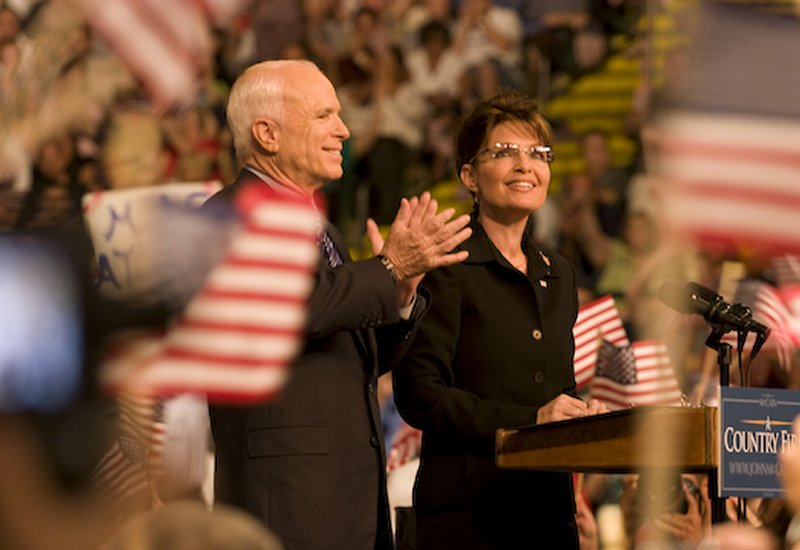 READ SARAH PALIN's INTRODUCTORY SPEECH IN DAYTON OHIO, AUGUST 29, 2008 On September 3, at the Republican Convention, Sarah gave a hard hitting, compelling acceptance speech, detailing her own qualifications and accomplishements as Governor in Alaska, clearly and compellingly pointing out the qualifications of John McCain as President, and contrasting and highlighting the differences between the GOP's conservative agenda and ticket and the very liberal agenda and ticket represented by Barack Hussein Obama and Joe Biden for the DNC.
After the speech, she was joined onstage by GOP Presidential Nominee, John McCain and her family where they all graciously waved to the crowd who had received her speech with many interruptions for applause and who cheered strongly as the entire ticket was on stage. Upwards of 40 million people viewed Sarah's acceptance speech that night and heard directly from the candidate without any media or opposition bias or spin..
 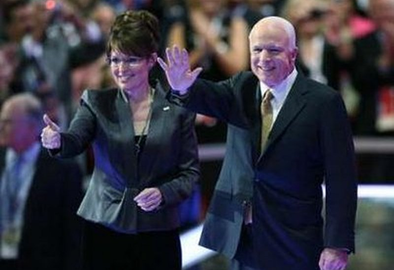 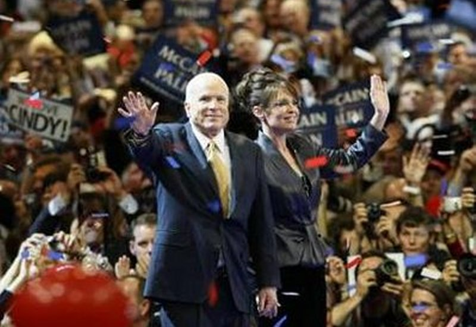 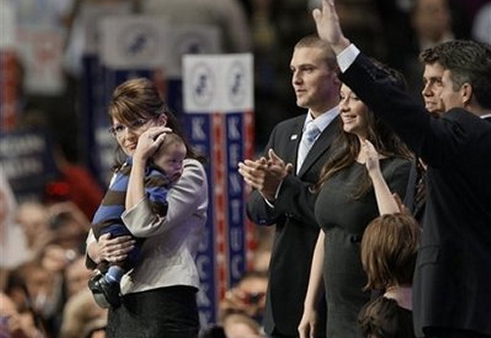 READ SARAH PALIN's CONVENTION ACCEPTANCE SPEECH , SEPTEMBER 3, 2008 It is this author's opinion that the character and the disgusting smear tactics will completely backfire on the instigators. The American people are drawn to all-American, family-oriented, fighters who take on the establishment and will view such attacks as the thinly veiled attempts they are to silence her. So, let's put the smears aside and focus on the legitimate question of experience...and apply it to both sides of the issue. Excuse me? She, Governor Sarah Palin, does not have enough executive experience? A simple analysis of the relative experience levels of Sarah Palin compared to either Democratic candidate puts this to rest. For over a decade, Sarah Palin has been involved in executive decision making at increasing levels of elected positions of public trust. Outside of running a political campaign, Obama has no executive experience and Biden has no executive experience. During these years, Palin left off running an actual private business in Alaska, a commercial fishing business where she had to experience what normal Americans experience in business having to meet budgets, payrolls, expenses, and the tax burden. After becoming involved in the local PTA for her children, others urged her to run for city council and she did so, on the platform of lowering taxes. She did that job so well, she was urged to run for Mayor where she was also elected in a relatively small town (about 10,000) near Anchorage, where people know one another and where she had to garner votes from people whom she had to look in the eye and make commitments to. Her campaign was based again on lowering taxes, cleaning up waste, and then ending any corruption.
She did that job so well as Mayor that she was ultimately elected to be Governor of the State of Alaska, managing 17,000 personnel and a 7 billion dollar budget. She has taken her lower taxes, government finance reform, and ending political corruption platform to the statehouse and succeeded so well that she has an absolutely bi-partisan approval rating of over 80% among the voters there. Obama and Biden have absolutely no comparable experience at all, neither of them, in excutive decision making, budgetary management, or organizational and policy management, or in approval ratings. All areas that Sarah Palin has been successfully accomplishing now for several years.
Mayor Sarah Palin executing her duties as Mayor. 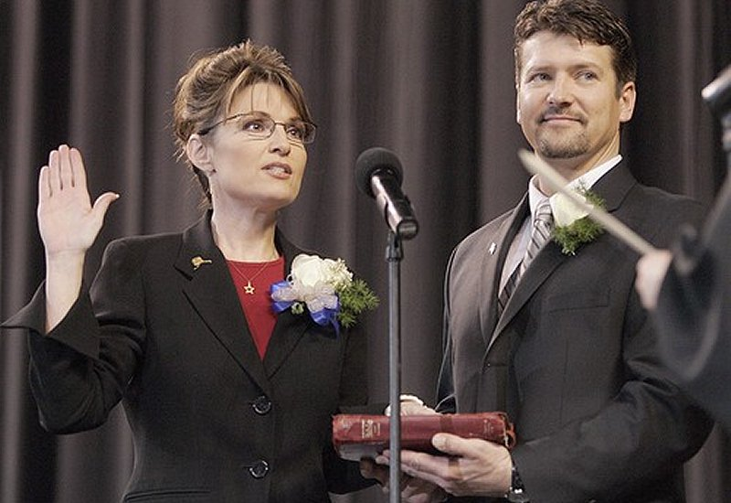 Sarah Palin being sworn in as Governor Governor Sarah Palin executing her duties as Governor, signing legislation. Governor Sarah Palin acting in her capacity as the executive of the State. In Alaska, as Governor, Sarah is also the Commander in Chief (CINC) of the Alaskan National Guard. This is a critical national assignment as Alaska sits on the border with Russia where Air National Guard aircraft intercept Russian Bear aircraft. Sarah Palin has taken her role as the Commander seriously, regularly visiting the units and coming to understand their duties and capabilites. Again, neither Obama or Biden have any comparable experience whatsoever.
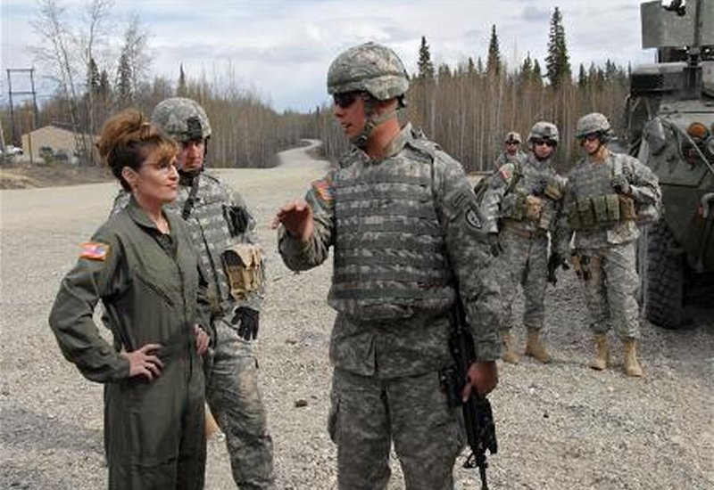  Governor Sarah Palin meeting in the field with Guard Units. 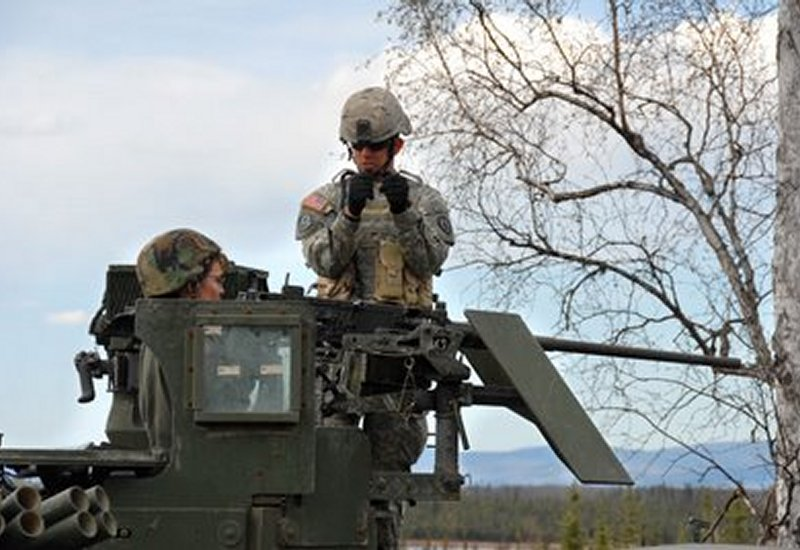 Governor Sarah Palin, and avid shooter herself, learns the operation of equipment of guard units (She's manning the gun). As Governor, Sarah has helped devise and push through a project for the largest natural gas line, and largest infrastructure project in the history of the US...taking on entrenched politicians (on both sides of the aisle), lobby groups, and large corporations in the process. This project leads the way to American energy independence which the vast majority of Americans want, and it is a very tangible accomplishment in a sea of words that have to date prodiced nothing by opposition candidates. Her involvement with, and her understanding of, the Energy issue is unmatached by either Democratic candidate.
 Outside of her direct role as Governor and speaking more to her personal values and commitment to them, Sarah and her family walk the walk on the pro-life issue. Having found out well in advance of delivery that her youngest child would have downs syndrome, she and her husband thanked God, called the upcoming responsibility and opportunity a blessing and brought the baby, Trig Palin, into a loving home. By contrast, Obama has stated publically that if his girls ever made a mistake, that he doesn't want them "punished" with a baby.
  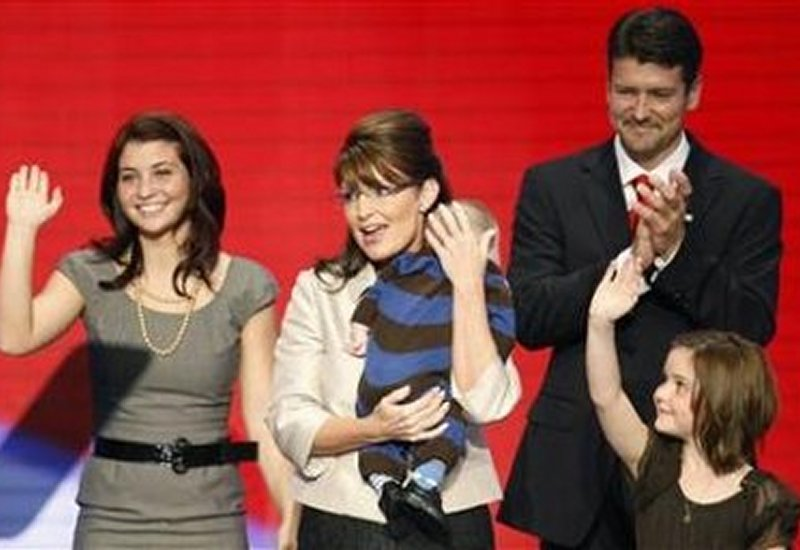 As Governor, while returning from visiting Alaskan National Guard troops on duty in Iraq, Governor Palin, unadvertised and unknown to the national media, stopped and visited the wounded soldiers recuperating in the American military hospital in Germany, while Obama, when given the same opportunity on his way back from his highly advertised international campaign tour, refused to comply with Defense Department guidelines regarding his entourage, and skipped that part of his schedule. The contrast could not be more compelling.
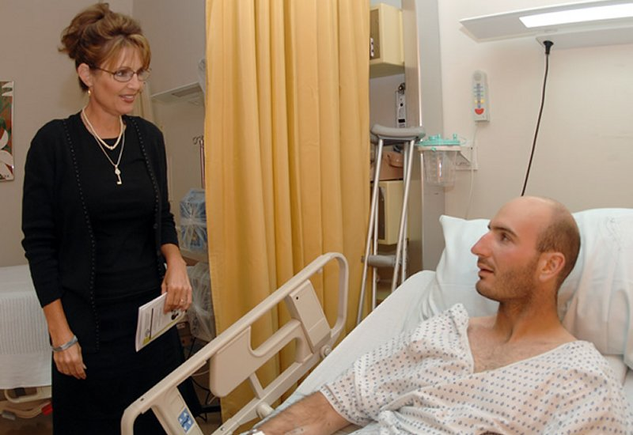 Beyond all of this, there is also a part of Sarah Palin that most hard working, patriotic, and committed Americans are coming to adore about her. She is real. She is authentic. She is a breath of fresh air in the usually dank and ill smelling profession of politics. Not only has she stood up to corrupt politics and the old networks that have produced so much waste, fraud, and "bridges to nowhere", she is also a regular person, and authentic all-American girl, wife, mother, and citizen. She has actually walked the walk of reform and change instead of just talking about it. She does not come from privelege, did not aspire to it, and was not placed by powerful or connected individuals into it. She did not attend the Ivy League or prestigous schools. She has gotten to where she is by pure honesty, integrity, hard work, and the strength of her good charachter and has been raising five kids and enjoying life while doing so.
 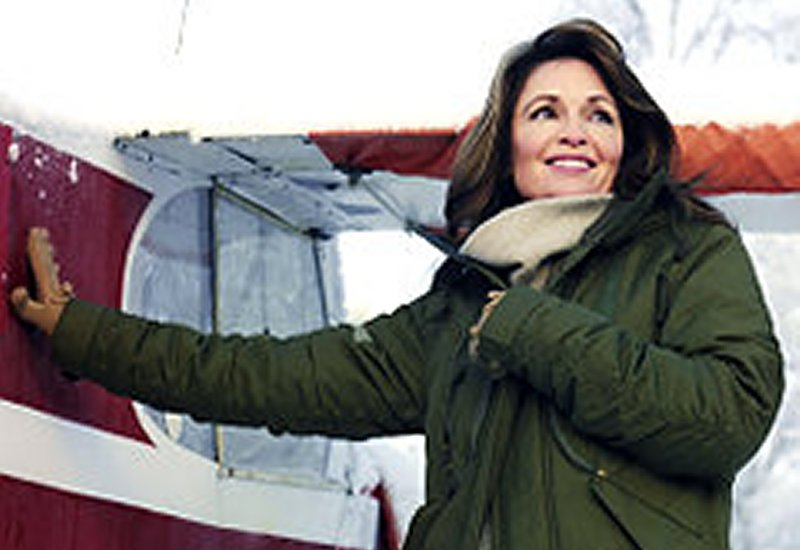 Sarah Palin loves to Four-wheel and fly with her family in Alaska.  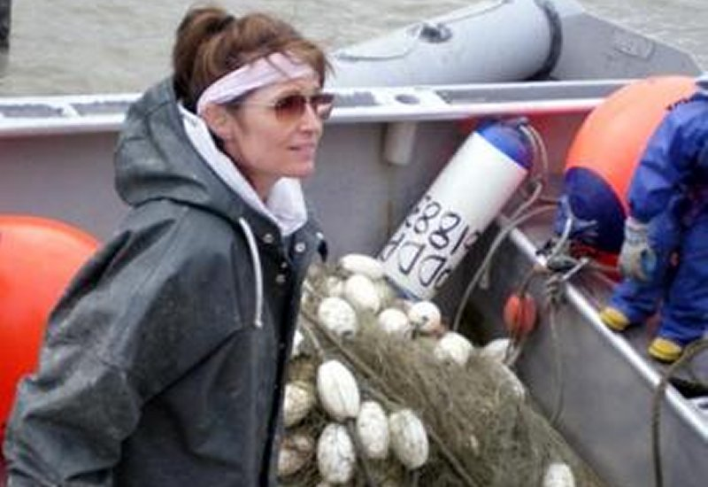 Sarah Palin loves to fish in Alaska.   Sarah Palin loves to hunt in Alaska. 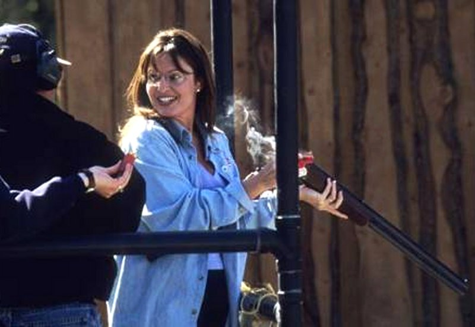  ..and, oh, did I mention? Sarah Palin loves to shoot. 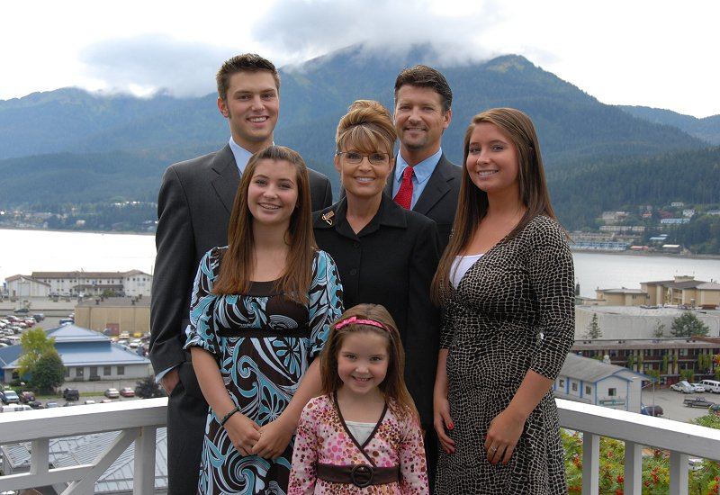 All of this drives the leftist and anti-American crowd mad. That is why they are attacking her so shamelessly. But those attacks will fail and they will fail because they will cause more and more Americans to look at her for themselves. What will they find? They will find that Sarah Palin is the real deal. Young, refreshing, dedicated wife, mother, American citizen. She is the real deal when it comes to the change that is so much needed in American politics, particularly in Washington. John McCain must be congratulated for vetting her, seeing this, and making the inspired decision to put her on his ticket and the national stage. Sarah Palin represents in fact, and in her own actions, what so many others (including Obama and the entrenched Biden) only talk about, and then go on with business as usual. Obama has, in his own actions and positions as a State Senator (voted merely present so many time in the State Senate, but voted no defending the Born Alive Abortion Protection Act there), in his own actions and positions as a US Senator (spent only 144 days on the job before beginning his campaign for the President-but in those short days was recognized as the Senator with the furthest left record), and particularly in his own willful associations of long standing with hateful, racists individuals like Jeremiah Wright (who preached "Not God bless American, No, No, No, God Damn America!) to Obama and his children, and with the likes of Bill Ayers, the unrepentant and militantly anti-American individual at whose house Obama kicked off his own political career, who bombed the US Pentagon, the US Capitol, and NY City Police Headquarters and then claimed in an interview published on 9/11 that his only regret was that he had not done more.
With such actions and such associations (not to mention Toni Rezco, Pleger, and others), Obama has proven that his type of change is precisely the type of change we do not want or need in Washington DC.
|
LINKS OF INTEREST
[JEFFHEAD.COM] - [THE AUDACITY OF TRUTH ABOUT BARRACK HUSSEIN OBAMA] - [HOW SARAH PALIN TRUMPS LIBERALS]

CLICK THE ABOVE BANNER FOR MORE CONSERVATIVE THEMED BUMPER STICKERS

CLICK THE ABOVE BANNER FOR EXCELLENT BUTTONS & TSHIRTS SUPPORTING SARAH
FINE ALL-AMERICAN, LIBERTY ORIENTED BOOKS AUTHORED BY JEFF HEAD
 Dragon's Fury - World War Against America and the West: Following great success in the War on Terror, politicians and analysts alike thought that future global conflict was impossible...but they were wrong. Journey into a possible future where Islamic terrorists sharpen their horrific skills & ally with Red China. In such a future, can the U.S. & western civilization survive? |
 The Stand at Klamatjh Falls: How rural western farmers and their supporters stood up to entrenched environmentalism, activist judges, and agencies of the Federal Government in southwestern Oregon...and prevailed. |
CLICK HERE TO RETURN TO:
Site, material, & designs Copyright © 2008 by Jeff Head, All Rights Reserved
This site is not in any manner associted with, or connected to, any political party or candidate.


free hit counter